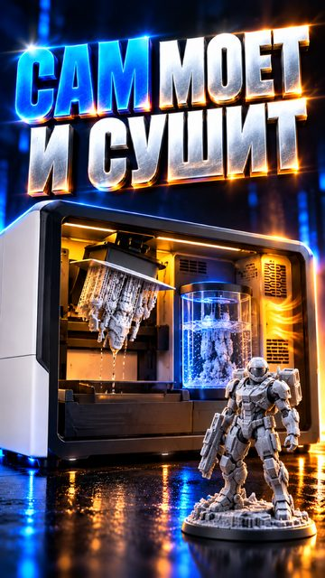
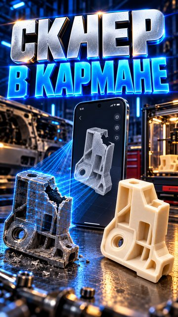
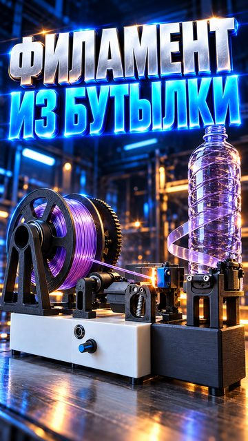
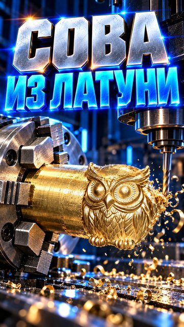

Maker tech in 60 seconds
iicon_news is a Russian-language short-video channel about the machines that make things: 3D printers, CNC mills, laser cutters and engravers, 3D scanners and plastic recycling. Every video takes one new tool or project and explains in about a minute what it does, how it works and what it costs.
What we cover
3D printing
New FDM and resin printers, multicolor printing, materials and real parts people print at home and at work.
CNC machines
Desktop mills and routers that cut wood, aluminum, brass and steel, and what they can really do.
Lasers
Diode, CO2 and fiber lasers for engraving, cutting, cleaning and welding.
3D scanning
Handheld scanners and phone photogrammetry for copying and repairing parts.
Recycling
Machines that turn bottles and failed prints back into filament.
AI for makers
Tools that turn text or a photo into a 3D model or a ready part.
Latest videos
New short videos several times a week on YouTube, TikTok and Instagram. The videos are in Russian.

UniFormation S10: a resin printer that washes and cures its own partsText-to-CAD: a free plugin turns one sentence into a printable part
Your phone is already a 3D scanner: free photogrammetryMulticolor 3D printing without a quarter of the spool going to wasteFormlabs Form Studio 1: parts thinner than a human hair
PETmachine turns plastic bottles into 3D printer filament
A solid brass owl milled on a desktop CNC machineHow the videos are made
Research
We follow manufacturers, Kickstarter launches and maker communities and pick tools with real footage and real prices.
Script and voice
A short script with facts and sources, voiced in Russian, with word-by-word subtitles.
Editing
Vertical 4K video built from the manufacturers' and creators' footage, credited in every description.
Publishing
The finished video goes to YouTube, Instagram and TikTok. For TikTok we use our own publisher app.